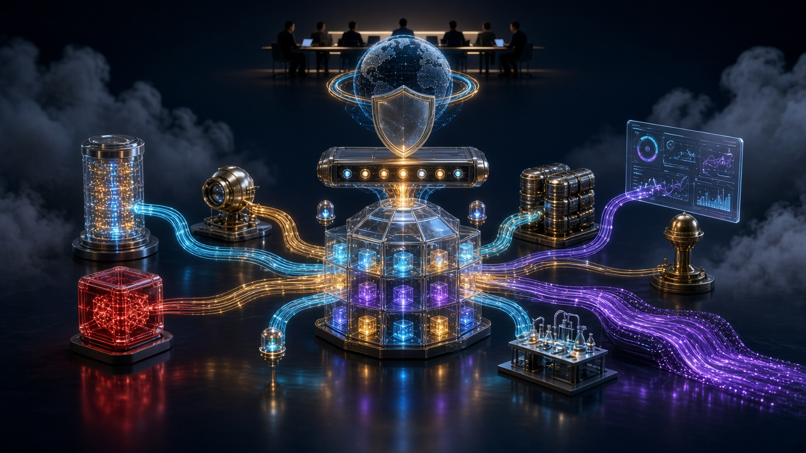
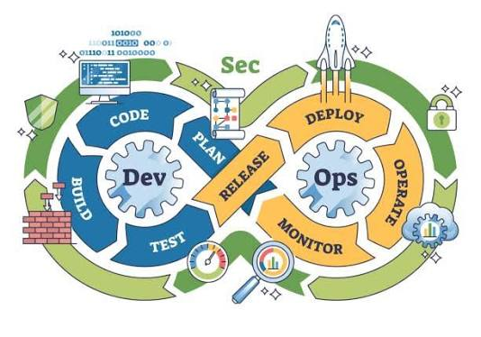
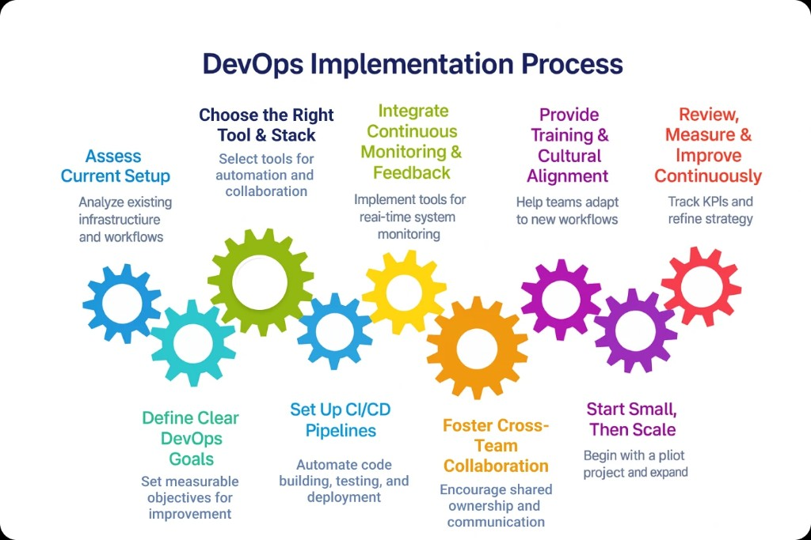

114+ technology titlesFrom fundamentals to advanced
CLOUDOPS TECHNOLOGY BOOK FEST
Great technology books.
Great technology books.
Better engineering.
Discover 114+ hand-picked titles covering programming, cloud, DevOps, databases, cybersecurity, AI and production engineering.
UP TO40%OFF
✓ Practical labs✓ Lifetime access✓ Skill certificates
Hands-on learningBooks connected to live labs
Always currentUpdated for modern platforms
Career focusedInterview and production ready
BROWSE YOUR WAY
View all books →Shop by technology
CURATED FOR YOU
Technology bestsellers
Build strong foundations, then move into cloud-native engineering.
No books foundTry another search or category.
BEYOND THE BOOKSLearn DevOps by running a
Learn DevOps by running a
real microservices platform.
The storefront itself is the lab: independently built services, container delivery, Kubernetes orchestration, PostgreSQL persistence and observable production workflows.
LIVE DELIVERY FLOW
From developer commit to a running Kubernetes pod
Every change follows a reviewable, repeatable path. The moving signal represents the same image progressing through the delivery chain.
01
GitHubSource and pull request02
CI PipelineTest, scan and build03
Docker HubImmutable image tag04
Argo CDGit reconciliation05
KubernetesHealthy workloadsKubernetes & EKS
Deployments, Services, ConfigMaps, Secrets, probes, resource controls, persistent storage and environment overlays.
kubeadmEKSHelmKustomize
Terraform & AWS
Reusable modules, remote state, locking, environment isolation and approval-controlled infrastructure delivery.
VPCEC2RDSIAM
CI/CD & GitOps
One build creates an immutable image that is promoted through environments with validation and rollback controls.
ActionsJenkinsArgo CDECR
Observability
Metrics, logs, dashboards and alerts prove that deployments are healthy and customer journeys work.
PrometheusGrafanaCloudWatchOTel
$ terraform plan -var-file=dev.tfvarsTerraform will perform the following actions:+ create aws_eks_node_group.apps~ update aws_lb.gatewayPlan: 1 to add, 1 to change, 0 to destroy.$ kubectl get pods -n cloudops-devweb 1/1 Runninggateway 1/1 Runningpostgresql-0 1/1 Running✓ deployment successfully rolled outCONTINUE THE JOURNEY
Cloud, DevOps and platform engineering—from foundations to the future
built as an end-to-end platform engineering lab
Microservices running through a Kubernetes gateway
Eleven independently built containers are deployed with health probes, resource controls, environment overlays, autoscaling and GitOps-ready manifests.
GitHub→CI & image scan→Container registry→Kubernetes→Gateway
same commands you run at work
Actual Infrastructure Logs
This is what current vs after apply / after rollout looks like — not a screenshot of a book cover.
plan, then apply
Terraform at Scale
terraform plan (now)
Terraform used the selected providers to generate the following execution
plan. Resource actions are indicated with the following symbols:
+ create
~ update in-place
Terraform will perform the following actions:
# aws_eks_node_group.apps will be updated in-place
~ instance_types = ["t3.medium"] -> ["t3.large"]
# aws_s3_bucket.exam_pass will be created
+ resource "aws_s3_bucket" "exam_pass" {
+ bucket = "reddy-buddu"
}
Plan: 1 to add, 1 to change, 0 to destroy.
terraform apply (after)
aws_s3_bucket.exam_pass: Creating... aws_eks_node_group.apps: Modifying... [id=demo:apps] aws_s3_bucket.exam_pass: Creation complete after 3s aws_eks_node_group.apps: Modifications complete after 2m11s Apply complete! Resources: 1 added, 1 changed, 0 destroyed. Outputs: cluster_name = "demo" node_type = "t3.large"
rollout, then prove it
Kubernetes in Production
kubectl get (now)
$ kubectl get nodes NAME STATUS ROLES AGE VERSION ip-10-0-3-18.ec2.internal Ready <none> 41d v1.31.4 ip-10-0-4-27.ec2.internal Ready <none> 41d v1.31.4 $ kubectl get pods -n academy NAME READY STATUS RESTARTS AGE web-6d8c9f7b4-nx2k4 1/1 Running 0 12d api-5f7d8c6a9-p1q2r 1/1 Running 0 12d
kubectl rollout (after)
$ kubectl rollout status deploy/web -n academy Waiting for deployment "web" rollout to finish: 1 old replicas are pending termination... deployment "web" successfully rolled out $ kubectl get pods -n academy -o wide NAME READY STATUS AGE NODE web-8c4b7d2f1-k9m1s 1/1 Running 38s ip-10-0-3-18 api-5f7d8c6a9-p1q2r 1/1 Running 12d ip-10-0-4-27
Traditional IT → Cloud Native → AI Powered Future
The Evolution of Cloud Computing
Stop scrolling. This is the whole journey on one stage.
1990s — early 2000s
Physical servers
- Physical servers
- Data centers
- Monolithic applications
- Manual deployments
- Network cables and racks


Present
Public Cloud
- Public cloud · AWS · Azure
- Kubernetes · DevOps · CI/CD
- EKS · Terraform · GitHub Actions
- Argo CD · Prometheus · Grafana
- OpenTelemetry · Platform engineering
The next decade
Future of AI & platforms
- AI agents
- Autonomous infrastructure
- AIOps · self-healing platforms
- Multi-cloud mesh
- Intelligent observability
from the edge to the cluster
Production Architecture on AWS

Users
CloudFront
WAF
Load Balancer
EKS Cluster
Microservices
the factory you rent by the hour
What Cloud actually is
Cloud is not “someone else’s computer” as a joke. It is a factory for compute, storage, network, and identity that you rent by the hour, the request, or the gigabyte. AWS, Azure, and GCP took the same building blocks a datacenter team used to purchase — racks, SAN, firewalls, load balancers — and turned them into APIs.
That change is the whole story. When a server was a purchase order, you planned capacity once a year. When a server is RunInstances, you plan for the next ten minutes. Cloud is why a two-person team can look like a platform company, and why a platform company can waste a fortune if nobody watches the bill.
Cloud and DevOps starts here on purpose. You cannot talk about Kubernetes, Terraform, or MLOps until you can draw a VPC, name an IAM role, put an object in S3, and explain why the security group is not a firewall you ignore.
habit, not a job title
What DevOps actually is
DevOps is not a job title you add to LinkedIn. It is the decision that the people who write the software also own how it gets to production, how it stays up, and how it is changed again on Tuesday. Development and operations used to throw tickets over a wall. DevOps removed the wall and kept the tickets honest: a pipeline, a review, a rollback.
The tools — Git, Jenkins, GitHub Actions, Ansible, Docker, Terraform, Prometheus, Grafana — are how that decision becomes muscle memory. A pipeline that tests, a plan you read before apply, a dashboard that tells you the site is quiet at 3 a.m. That is DevOps. A certification with no scar tissue is not.
- Source of truth lives in Git, not in a wiki that drifted.
- Every change is reviewable: pull request, Terraform plan, Helm diff.
- Production is boring: same image, same chart, same alarm, every time.
- When it breaks, the same people who shipped it can see the metrics and roll back.


before the credit card was a datacenter
How Cloud was in the Past
1990s–2000s
You bought a server. You waited weeks. You installed Linux by hand. You named it after a planet. When it died, the site died with it. Releases were weekend events. A rollback meant a person with a CD and a prayer.
Virtualization
VMware and later OpenStack let you slice one box into many. Faster, still yours to patch. Tickets moved from “buy a server” to “please provision a VM.” Operations still owned the keys. Developers still waited.
2006–2013
AWS opened EC2 and S3. Suddenly a credit card was a datacenter. Early Cloud was still treated like a cheaper colo: long-lived instances, SSH, snowflake configs. DevOps as a word arrived (2009, Velocity, “10+ deploys a day”). The first CI servers and configuration tools — Hudson/Jenkins, Puppet, Chef, then Ansible — tried to make those snowflakes repeatable.
2013–2018
Docker made the unit of work an image. Kubernetes (2014, then EKS later) made the unit of runtime a cluster. Terraform made the unit of infrastructure a plan. GitHub and GitLab made the unit of change a pull request. This is the stack most “DevOps engineers” still mean when they say the word.
2018–2024
GitOps (Argo CD, Flux), service mesh, observability (Prometheus, Grafana, OpenTelemetry), and platform teams. The job split: some people still SSH, some people sell an internal platform so application teams never see the cluster. MLOps borrowed the same loop for models: train, register, deploy, watch.
mid-sentence, right now
Cloud Native Present
Right now the industry is mid-sentence. Kubernetes is default for new platforms and still too much for a single VM shop. Terraform and OpenTofu fight over the language of plan/apply. CI is a commodity (GitHub Actions, GitLab, Jenkins that will not die). The new work is not “can you write a Deployment YAML.” The new work is cost, security, and a golden path that a product team can use without paging you.
Cloud is also getting smaller and larger at the same time. Smaller: serverless, edge, one-function services. Larger: multi-account AWS, landing zones, Control Tower, org-wide SCPs. A good engineer can do both — a Lambda that stays cheap, and an org that does not become a permission swamp.
What is already arriving: platforms as products (Backstage, Internal Developer Platforms), policy as code (OPA, Kyverno), supply-chain security (SBOMs, signed images), and FinOps sitting in the same standup as SRE. If you only learn kubectl, you will be the person who is still SSHing while the platform team versions the path you should have been on.
the junior you still review
Future of AI & Platform Engineering
AI does not replace the person who understands blast radius. It replaces the empty twenty minutes: writing the fifth Helm values file, explaining a Terraform error you have seen before, drafting the runbook paragraph, summarizing last night’s page.
- Faster first draft. A pipeline, a Grafana panel, a Terraform module — the model gets you to “almost.” You still read the plan.
- Incident companion. Paste logs, get a short list of likely causes. You still check the dashboard. You do not let the model restart prod because it sounded sure.
- Docs that exist. The thing DevOps always skipped. AI can turn a working repo into an operator page. A human still deletes the lies.
- Exam and lab coach. Cloud and DevOps uses a model to score “are you ready,” not to pretend you deployed Kubernetes.
- What it must not do. Apply Terraform unsupervised. kubectl delete on a hunch. Put secrets in the prompt. Invent a CVE fix you did not read.
The useful rule: AI writes, humans approve, pipelines enforce. That is the same rule as code review. The model is another junior. You would not give a junior the prod account on day one.
the work remains, the label may not
DevOps in 10 years
In 2035 the word DevOps may sound like “webmaster” does now — a label from a fight that was already won. The work will still exist. It will look more like this:
Platforms win
Most product engineers will not open a cluster. They will open a portal, pick a golden path, and get a preview URL. Platform engineers will own those paths the way DBAs once owned the database. Kubernetes will still be underneath, the way Linux is underneath today: everywhere, rarely the thing you talk about in the standup.
AI in the loop
Pipelines will propose the change, the test, and the rollback. Humans will still hold the last approval for anything that can take a customer down. The scarce skill will be taste: knowing when the suggestion is dangerous.
Cost is a feature
Idle GPU, zombie load balancers, and multi-AZ by default will be treated like a bug. FinOps will not be a quarterly slide. It will be an alert next to latency.
Security is the pipeline
Unsigned images will not schedule. SBOMs will be as normal as a lockfile. Identity will be workload identity, not a shared SSH key in a password manager.
Models are services
MLOps and DevOps will finish merging. A model will have an owner, a budget, an SLO, and a rollback, the same as an API. If you learned only Docker, you will be late. If you learned the loop — build, prove, ship, watch — you will still be employed.
That is why this academy is not “one book on a page.” The book icons above are the chapters. The story is the job: Cloud as the factory, DevOps as the habit, AI as the junior, and ten years as the reason you keep learning the loop instead of a logo.
the shelf, not one cover
Every book is a real title
Click any icon above. Each one maps to a focused book: AWS Cloud Foundations, Terraform in Practice, Amazon EKS Operations, Docker and Containers, Ansible Automation, GitHub Actions Pipelines, Jenkins for CI, Git and Release Flow, Python for Operations, Observability with Prometheus and Grafana, OpenTelemetry, AI Engineering, Machine Learning, MLOps on AWS, Cloud Security, Linux, Helm, Serverless, SRE, and the exam packs. You do not get a single cover filling the screen. You get the whole shelf, the way Odoo shows the whole app wall.